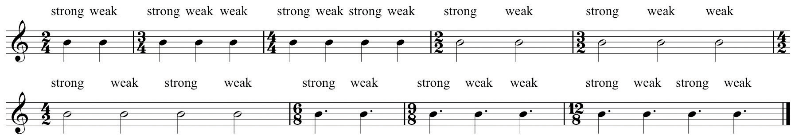
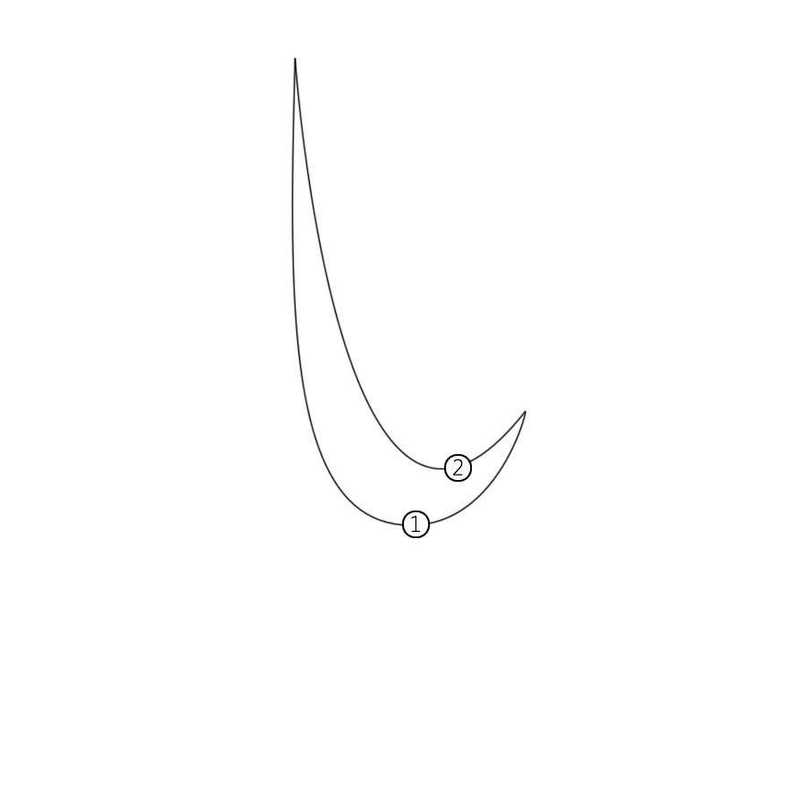
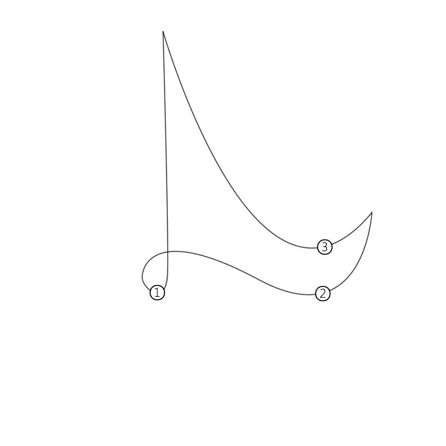
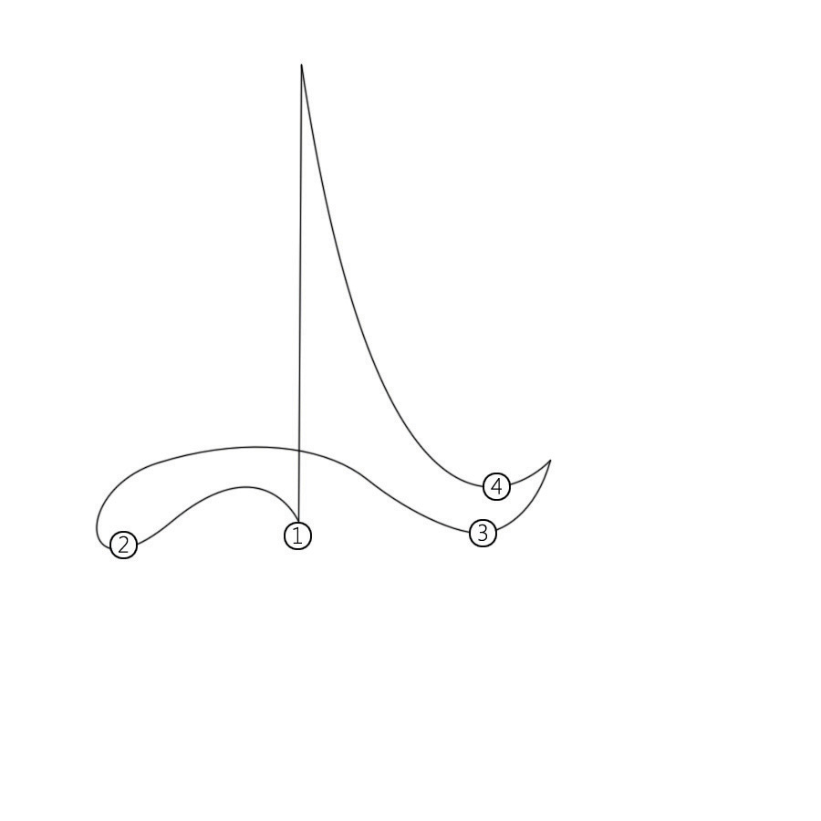
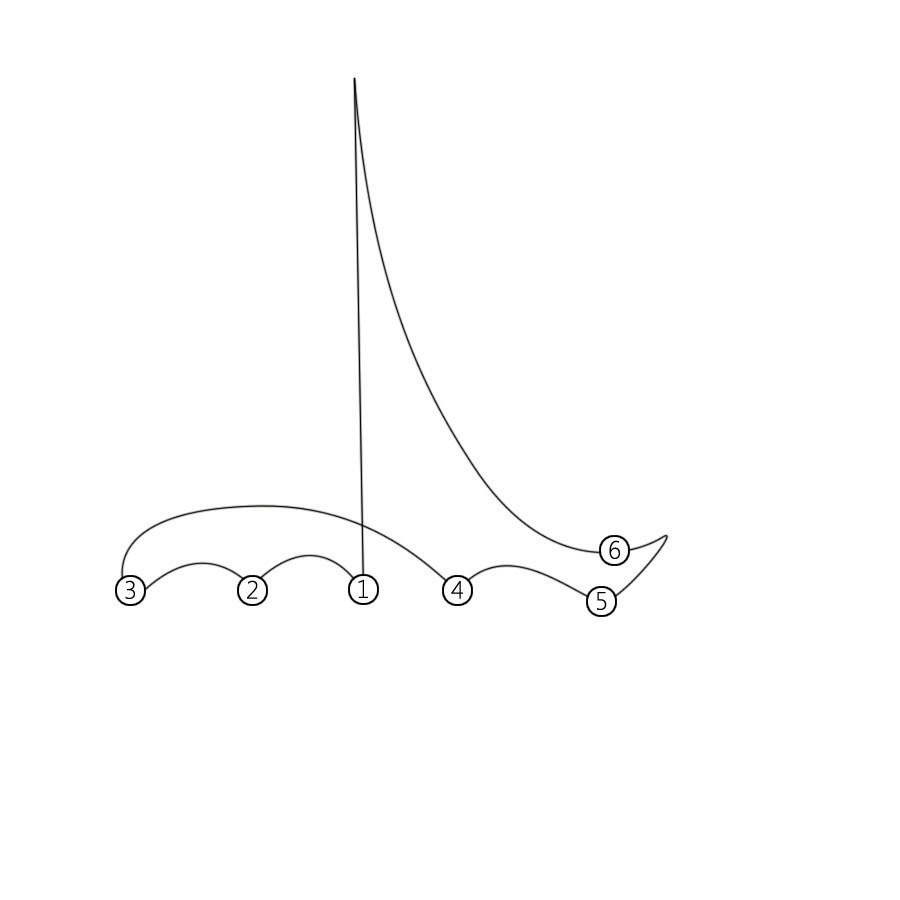
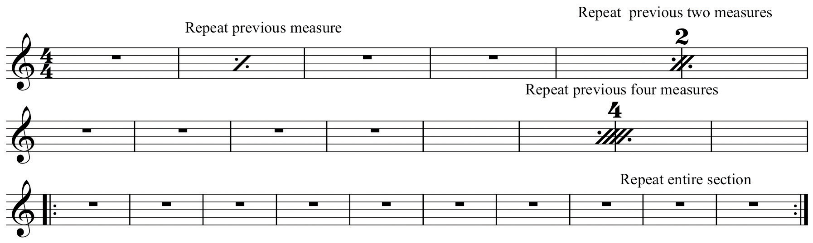
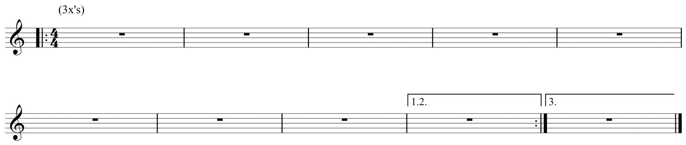
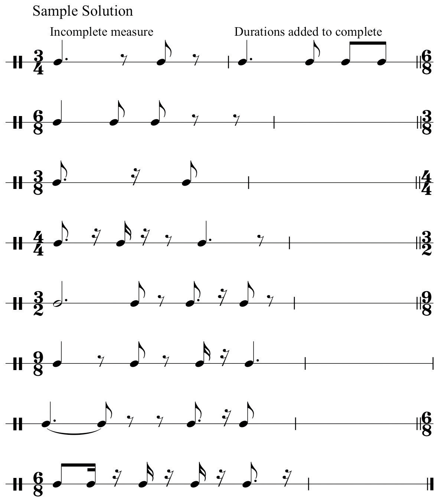

In Section 1.2 "Pulse, Tempo, and Meter", when describing meter and time signatures, we spoke of “grouping pulse values together” to form discrete units. In music these groupings are delimited, or “bounded” by vertical strokes called bar lines. Bar lines serve as boundaries, defining a “measure” of music.For these examples we will employ a five-line staff. Use of the staff will be explained fully in Chapter 2 "The Elements of Pitch:Sound, Symbol, and Tone".
The crossover period between Renaissance and Baroque music at end of the 16th Century and the beginning of the 17th Century witnessed many changes as to how music was written. The rise of the “Second Practice,” (Seconda prattica) or “New Style” (Stile moderno) of composition (early opera) and the concomitant rise of instrumental music necessitated changes in notational practice.
Since rhythmic durations in Renaissance music were organized in proportion to one another (differing forms of mensural notation), measures and their separating bar lines were not in use, nor were time signatures, as we know them. These elements came into gradual use. Scholars offer many explanations for this: practicality and ease of reading and interpretation, a shift away from multi-voiced music and toward solo or homophonic settings in dramatic music, the desire for segmenting music into discrete segments, and so forth.
This became common notational practice. A measureA measure of music is a span of music, bounded by a bar line. It is a discrete grouping of pulse values dictated by the time signature. of music constituted beat groupings (or their durational equivalents) within the context of the stated time signature, bounded by a bar-line. Composers may use a double bar line to denote sectional divisions in a piece. A final bar line ends the composition.
Figure 1.27 Measure, Bar lines, Double bar line, Final bar line

Within measures, specified beats received greater of lesser accentuation, referred to simply as “strong” or “weak” beats. This perception is based upon how the relative strength of beats is perceived in a given time signature.
Figure 1.28 Sample Time Signatures and Beat Accents
As performers, as teachers, and as potential ensemble leaders, all musicians must have a basic understanding of typical conducting patterns. In conducting, the terms arsis and thesis will be encountered. In this context, synonyms for these terms are “upbeat” (preparatory beat) and “downbeat” (commencement beat). The common conducting patterns are shown in Figure 1.29 "Two-Pattern" through Figure 1.33 "Six-Pattern".
The Basic Two-Pattern: for example any simple duple or compound duple time signature. When practicing this, think “away (from the body)-up, away-up…
Figure 1.29 Two-Pattern
All conducting figures by Michael Paolantonio
The Basic Three-Pattern: any simple triple or compound triple time signature. Think “down-away-up…”
Figure 1.30 Three-Pattern
All conducting figures by Michael Paolantonio
The Basic Four-Pattern: any simple or compound quadruple time signature. Think “down-across-away-up…”
Figure 1.31 Four-Pattern
All conducting figures by Michael Paolantonio
The One-Pattern: depending upon tempo, triple meters may be conducted “in one.” Refer to Section 1.2 "Pulse, Tempo, and Meter".
Figure 1.32 One-Pattern

All conducting figures by Michael Paolantonio
The Basic Six-Pattern:
Figure 1.33 Six-Pattern
All conducting figures by Michael Paolantonio
Numerous expedient shortcuts evolved to facilitate writing music efficiently, as well as eliminating the redundancy of writing a given passage over again. Specific symbols, called repeat signsSpecial symbols indicating that segments of the music previously performed are to be repeated. or repeats, came into use whereby a composer could indicate the repetition of a measure, a group of measures, or an entire passage.
Figure 1.34 Repeats, Measure Repeats, Section Repeats
A repeated section might end differently than its first iteration: the repeated section might end differently or it might make a transition to a new section. Composers employ “First and Second Endings” to serve this function.
Figure 1.35 First and Second Endings

A passage repeated multiple times is so indicated by listing the number of repetitions in the first ending. In Jazz notation and vernacular music, this may be accompanied by an instruction at the beginning of the passage that indicates the number of iterations, for example, 3x’s, meaning “repeat this passage three times.”
Figure 1.36 Multiple Endings
At times in a composition, it is desirable or necessary to repeat an entire earlier passage, or return to the beginning of the piece. Rather than re-write the particular passage, specific notational expedients evolved to accommodate this. These shortcuts employed Italian phrases, accompanied by specific symbols. These phases and symbols are directions to the performer as to what segment is repeated and how to conclude the piece.
Figure 1.37 D.C. al Fine, D.S. al Coda

The student should be able to define and understand:
Incomplete rhythms are given in each of the following measures. Add the appropriate durational value to complete the measure. See example.
Figure 1.38 Incomplete Measures
For each of the following examples write in the missing time signature and label the meter type.
Figure 1.39 Identify Meter

In each example below using “roadmaps”, draw arrows to indicate what segment is repeated and how the segment concludes. See example.
Figure 1.40 “Roadmaps”